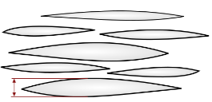
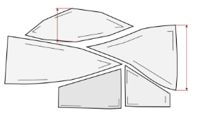
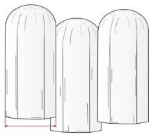
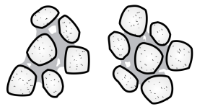
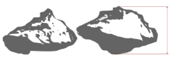

Appendix A — Field Guide
This field guide helps describe soils. It provides all field characteristics needed for WRB classification and some other general field characteristics. This field guide is not supposed to be a comprehensive manual. People using this guide must have basic knowledge in soil science and experience in the field. In many soils, some of the listed characteristics are not present. Every characteristic must be reported in the soil description sheet (Annex 4, Chapter 11) using the provided codes.
The field guide consists of six consecutive parts:
- Preparation work and general rules
- General data and description of soil-forming factors
- Description of surface characteristics
- Description of layers
- Sampling
- References
A.1 Preparation work and general rules
A.1.1 Exploration of an area of interest with auger and spade


Select your area of interest and give it a distinct name, e.g., Gombori Pass. Then select a location. For further exploration, use a Pürckhauer or an Edelman auger. If using a Pürckhauer auger, drive it into the soil vertically with a plastic hammer. Occasionally, turn the auger with the help of the turning bar, especially in clay-rich soils. If the auger hits a rock or big stone, take it out. You may try again a small distance apart but be careful not to damage the auger. Drive the auger in to a depth of 1 m if possible. If not, note the actual depth that was reached. To take it out, turn it while pulling.
Now place the auger onto the ground. Cut the protruding soil material with a knife and remove it to the side. Avoid contaminating one layer with the removed material from another. Be aware that compaction inside the auger may have occurred; the layer depths may therefore not be accurate. Place a folding ruler aside the auger according to the actually reached depth (Figure 8.2).
In most cases, the topsoil falls out of the auger. To investigate it in more detail, always make a mini-profile close to where the auger was driven in. It should be at least 25 cm deep and wide, and the profile walls should be vertical and smooth. Now place a folding ruler inside the profile in such a way that point 0 is at the soil surface (see Chapter 8.3.1). For later reconstruction, it may help to take a picture of the mini-profile (Figure 8.3).
The characteristics that can be described from the soil material in the auger are marked with an asterisk (*) in Chapter 8.4.
A.1.2 Preparation of a soil profile
The soil profile should be at least 1 m deep or reach the parent material. On a slope, unless the parent material starts at smaller depth, the profile depth (Figure 8.4) should be 1 m / cos(α). For the decision if the thickness and depth criteria of the WRB are fulfilled and when calculating element stocks (Prietzel and Wiesmeier 2019) the layer thickness perpendicular to the slope is needed. This is calculated multiplying the vertical thickness by cos(α).
The profile should be 1 m wide. If on a slope, the profile wall must be parallel to the contour lines. The material should be piled up to the left and/or right side of the profile and must not be placed on top side of the profile (the side of the profile wall). Never walk or place tools on the side of the profile wall. It is recommended to collect the soil material on two tarps, topsoil and subsoil separately. When refilling the soil profile later, you should first fill in the subsoil and then the topsoil.

Carefully prepare the profile wall: it must be strictly vertical and smooth. Roots should be cut directly at the profile wall. Use an appropriate tool to clean the profile wall horizontally and avoid vertical smearing. Place the measuring tape in such a way that point 0 is at the soil surface (see Chapter 8.3.1). It should be at one side but not touch the side walls. It must be strictly vertical and plane. It may help to weight the bottom end of the tape with a stone or stick. Take a photo. Hold the camera perpendicularly to the profile wall (Figure 8.5). Avoid any inclination. Also take at least one picture of the surrounding terrain and vegetation (Figure 8.6), e.g., the tree canopy. Make sure you will be able to associate profile and photo later. If possible, save and name the pictures the same day they are taken.
If you describe a soil profile that has been dug some time ago, the topsoil may be disturbed. To describe the humus forms, you need a fresh miniprofile nearby the soil profile.

A.2 General data and description of soil-forming factors
This Chapter refers to some general data and to the soil-forming factors climate, landform and vegetation. Other soil-forming factors are described with the layer description.
A.2.2 Location
Give the location a name and report it; e.g., Gombori Pass 1.
Report the GPS coordinates.
Report the altitude above sea level (a.s.l.); e.g., 106 m.
A.2.3 Landform and topography
This Chapter refers to the large-scale topography. For local surface unevenness, see Chapter 8.3.11.
Gradient
Report the ground surface inclination with respect to the horizontal plane. If the profile lies on a flat surface, the gradient is 0%. If it lies on a slope, make 2 records, one upslope and one downslope; e.g., upslope: 18%, downslope: 16%.
Slope aspect
If the profile lies on a slope, report the compass direction that the slope faces, viewed downslope; e.g., 225°.

Slope shape
If the profile lies on a slope, report the slope shape in 2 directions: up-/downslope (perpendicular to the elevation contour, i.e. the vertical curvature) and across slope (along the elevation contour, i.e. the horizontal curvature); e.g., Linear, Convex or Concave.
A.2.4 Climate and weather
Climate
Report the climate according to Köppen (1936) and the ecozones according to Schultz (2005, adapted). The term ‘summer’ refers to the season with high solar altitude and the term ‘winter’ to the season with low solar altitude.
| Climate | Code |
|---|---|
| Tropical climates | A |
| Tropical rainforest climate | Af |
| Tropical savanna climate with dry-winter characteristics | Aw |
| Tropical savanna climate with dry-summer characteristics | As |
| Tropical monsoon climate | Am |
| Dry climates | B |
| Hot arid climate | BWh |
| Cold arid climate | BWc |
| Hot semi-arid climate | BSh |
| Cold semi-arid climate | BSc |
| Temperate climates | C |
| Mediterranean hot summer climate | Csa |
| Mediterranean warm/cool summer climate | Csb |
| Mediterranean cold summer climate | Csc |
| Humid subtropical climate | Cfa |
| Oceanic climate | Cfb |
| Subpolar oceanic climate | Cfc |
| Dry-winter humid subtropical climate | Cwa |
| Dry-winter subtropical highland climate | Cwb |
| Dry-winter subpolar oceanic climate | Cwc |
| Continental climates | D |
| Hot-summer humid continental climate | Dfa |
| Warm-summer humid continental climate | Dfb |
| Subarctic climate | Dfc |
| Extremely cold subarctic climate | Dfd |
| Monsoon-influenced hot-summer humid continental climate | Dwa |
| Monsoon-influenced warm-summer humid continental climate | Dwb |
| Monsoon-influenced subarctic climate | Dwc |
| Monsoon-influenced extremely cold subarctic climate | Dwd |
| Mediterranean-influenced hot-summer humid continental climate | Dsa |
| Mediterranean-influenced warm-summer humid continental climate | Dsb |
| Mediterranean-influenced subarctic climate | Dsc |
| Mediterranean-influenced extremely cold subarctic climate | Dsd |
| Polar and alpine climates | E |
| Tundra climate | ET |
| Ice cap climate | EF |
| Ecozone | Code |
|---|---|
| Tropics with year-round rain | TYR |
| Tropics with summer rain | TSR |
| Dry tropics and subtropics | TSD |
| Subtropics with year-round rain | SYR |
| Subtropics with winter rain (Mediterranean climate) | SWR |
| Humid mid-latitudes | MHU |
| Dry mid-latitudes | MDR |
| Boreal zone | BOR |
| Polar-subpolar zone | POS |
Season of Description
Report the season of the description. Vegetation can best be described in the season of full vegetation development.
| Ecozone | Season | Code |
|---|---|---|
| SYR, SWR, MHU, MDR, BOR, POS | Spring | SP |
| Summer | SU | |
| Autumn | AU | |
| Winter | WI | |
| TSR | Wet season | WS |
| Dry season | DS | |
| TYR, TSD | No significant seasonality for plant growth | NS |
Weather conditions
Report the current and past weather conditions.
| Current weather conditions | Code |
|---|---|
| Sunny/clear | SU |
| Partly cloudy | PC |
| Overcast | OV |
| Rain | RA |
| Sleet | SL |
| Snow | SN |
| Past weather conditions | Code |
|---|---|
| No rain in the last month | NM |
| No rain in the last week | NW |
| No rain in the last 24 hours | ND |
| Rain but no heavy rain in the last 24 hours | RD |
| Heavy rain for some days or excessive rain in the last 24 hours | RH |
| Extremely rainy or snow melting | RE |
A.2.5 Vegetation and land use
This Chapter refers to all kinds of plant cover from completely natural to completely human-made. It is not a vegetation survey, and only the really soil-relevant characteristics are reported. If the land is cultivated as cropland or grassland, the cultivation type is reported. In all other cases, the vegetation type is reported. Observe an area (10 m x 10 m, if possible) with the profile at its centre.
Vegetation strata
The following strata are relevant.
| Criterion | Stratum | Code |
|---|---|---|
| Ground vegetation | Ground stratum | GS |
| If both ground stratum and upper stratum are present, you may define a midstratum between the upper stratum and the ground stratum | Mid-stratum | MS |
| Tallest plants (only if crown cover ≥ 5%) | Upper stratum | US |
Vegetation type or cultivation type
If the land is not cultivated, report the vegetation type according to Table 8.8, for each stratum separately; if more than one type occurs in the same stratum, report up to three, the dominant one first. If the land is cultivated, report the cultivation type according to Table 8.9; cultivated land may show several strata, but they are not reported separately.
| Life form | Vegetation type | Code |
|---|---|---|
| Aquatic | Algae: fresh or brackish | AF |
| Aquatic | Algae: marine | AM |
| Aquatic | Higher aquatic plants (woody or non-woody) | AH |
| Surface crusts | Biological crust (of cyanobacteria, algae, fungi, lichens and/or mosses) | CR |
| Terrestrial non-woody plants | Fungi | NF |
| Terrestrial non-woody plants | Lichens | NL |
| Terrestrial non-woody plants | Mosses (non-peat) | NM |
| Terrestrial non-woody plants | Peat | NP |
| Terrestrial non-woody plants | Grasses and/or herbs | NG |
| Terrestrial woody plants | Heath or dwarf shrubs | WH |
| Terrestrial woody plants | Evergreen shrubs | WG |
| Terrestrial woody plants | Seasonally green shrubs | WS |
| Terrestrial woody plants | Evergreen trees (mainly not planted) | WE |
| Terrestrial woody plants | Seasonally green trees (mainly not planted) | WT |
| Terrestrial woody plants | Plantation forest, not in rotation with cropland or grassland | WP |
| Terrestrial woody plants | Plantation forest, in rotation with cropland or grassland | WR |
| None (barren) | Water, rock, or soil surface with < 0.5% vegetation cover | NO |
| Cultivation type | Code |
|---|---|
| Simultaneous agroforestry system with trees and perennial crops | ACP |
| Simultaneous agroforestry system with trees and annual crops | ACA |
| Simultaneous agroforestry system with trees, perennial and annual crops | ACB |
| Simultaneous agroforestry system with trees and grassland | AGG |
| Simultaneous agroforestry system with trees, crops and grassland | ACG |
| Pasture on (semi-)natural vegetation | GNP |
| Intensively-managed grassland, pastured | GIP |
| Intensively-managed grassland, not pastured | GIN |
| Perennial crop production (e.g. food, fodder, fuel, fiber, ornamental plants) | CPP |
| Annual crop production (e.g. food, fodder, fuel, fiber, ornamental plants) | CPA |
| Fallow, less than 12 months, with spontaneous vegetation | FYO |
| Fallow, at least 12 months, with spontaneous vegetation | FOL |
| Fallow, all plants constantly removed (dry farming) | FDF |
Vegetation height, cover and taxa
For non-cultivated land, report the following characteristics:
- Report the average height and the maximum height in m above ground for each stratum separately.
- Report the vegetation cover. For the upper stratum and the mid-stratum, report the percentage (by area) of the crown cover. For the ground stratum, report the percentage (by area) of the ground cover.
- Report up to three important species per stratum, e.g., Fagus orientalis. If you do not know the species, report the next higher taxonomic rank.
Actual or last cultivated species
For cultivated land, report the actual cultivated species using the scientific name, e.g., Zea mays. If currently under fallow, report the last species and indicate month and year of harvest or of cultivation cessation. If more than one species is/was grown simultaneously, report up to three in the sequence of the area covered, starting with the species that covers the largest area; this includes tree species in simultaneous agroforestry systems.
Rotational cultivated species
For cultivated land, report the species that have been cultivated in the last five years in rotation with the actual or last species. Report up to three in the sequence of frequency, starting with the most frequent species; this includes tree species in rotational agroforestry systems.
Special techniques to enhance site productivity
Report the techniques that refer to the surrounding area of the soil profile. Techniques that affect certain soil layers are reported for the respective layer. Techniques that cause surface unevenness have to be reported in Chapter 8.3.11, additionally. If more than one type is present, report up to three, the dominant one first.
| Type | Code |
|---|---|
| Drainage by open canals | DC |
| Underground drainage | DU |
| Wet cultivation | CW |
| Irrigation | IR |
| Raised beds | RB |
| Human-made terraces | HT |
| Local raise of land surface | LO |
| Other | OT |
| None | NO |
A.3 Description of surface characteristics
Surface characteristics can be detected on the soil surface without looking into a soil profile.
A.3.1 Soil surface
A litter layer is a loose layer that contains > 90% (by volume, related to the fine earth plus all dead plant remnants) recognizable dead plant tissues (e.g. undecomposed leaves). Dead plant material still connected to living plants (e.g. dead parts of Sphagnum mosses) is not regarded to form part of a litter layer. The soil surface (0 cm) is by convention the surface of the soil after removing, if present, the litter layer and, if present, below a layer of living plants (e.g. living mosses). The mineral soil surface is the upper limit of the uppermost mineral horizon (see Chapter 2.1, General rules, and see Chapter 8.4.4).
A.3.2 Litter layer
Observe an area of 5 m x 5 m with the profile at its centre. Report the average and the maximum thickness of the litter layer in cm (see Chapter 8.3.1). If there is no litter layer, report 0 cm as thickness.
A.3.3 Rock outcrops
Rock outcrops are exposures of bedrock. Observe an area (10 m x 10 m if possible) with the profile at its centre. Report the percentage of the area that is covered by rock outcrops. Also report in m the average distance between rock outcrops and their size (average length of the greatest dimension).
A.3.4 Coarse surface fragments
Coarse surface fragments are loose fragments lying at the soil surface, including those partially exposed. Observe an area (5 m x 5 m if possible) with the profile at its centre. The Table indicates the average length of the greatest dimension in cm.
| Size (cm) | Size class | Code |
|---|---|---|
| > 0.2--0.6 | Fine gravel | F |
| > 0.6 - 2 | Medium gravel | M |
| > 2 - 6 | Coarse gravel | C |
| > 6 - 20 | Stones | S |
| > 20 - 60 | Boulders | B |
| > 60 | Large boulders | L |
| No coarse surface fragments | N |
Report the total percentage of the area that is covered by coarse surface fragments. In addition, report at least one and up to three size classes and report the percentage of the area that is covered by the coarse surface fragments of the respective size class, the dominant one first.
A.3.5 Desert features
Coarse fragments that are constantly exposed to wind-blown sand may be affected by abrasion, etching and polishing, which results in even surfaces with sharp edges. These fragments are called ventifacts (windkanters), and their totality is called desert pavement. Observe an area of 5 m x 5 m with the profile at its centre and report the percentage of ventifacts out of the coarse fragments > 2 cm (greatest dimension).
Coarse fragments may show chemical weathering, which may lead to the formation of oxides and an intense colour at their upper surfaces, whereas there is no such weathering and therefore the original rock colour at their lower surfaces. This intense colour at the upper surfaces is called desert varnish. Observe an area of 5 m x 5 m with the profile at its centre and report the percentage of coarse fragments > 2 cm (greatest dimension) featuring desert varnish.
A.3.6 Patterned ground
Patterned ground is the result of material sorting due to freeze-thaw cycles in permafrost regions. Report the sorting of coarse fragments > 6 cm (greatest dimension) at the soil surface.
| Form | Code |
|---|---|
| Rings | R |
| Polygons | P |
| Stripes | S |
| None | N |
A.3.7 Surface crusts
Surface crusts are described as layers in Chapter 8.4.31 and further explained there. The area covered is described here. Observe an area (5 m x 5 m if possible) with the profile at its centre. Report the percentage of the area that has a surface crust.
A.3.8 Surface cracks
Cracks are fissures other than those attributed to soil structure (see Chapter 8.4.10). If surface cracks are present, report the average width of the cracks. If the soil surface between cracks of larger width classes is regularly divided by cracks of smaller width classes, report the two width classes. If different width classes occur randomly, just report the dominant one. The continuity of cracks to a greater depth is reported with the layer description (see Chapter 8.4.13). For every width class, report the average distance between the cracks and the spatial arrangement and persistence of the cracks.
Width
| Width (cm) | Width class | Code |
|---|---|---|
| ≤ 1 | Very fine | VF |
| > 1 - 2 | Fine | FI |
| > 2 - 5 | Medium | ME |
| > 5 - 10 | Wide | WI |
| > 10 | Very wide | VW |
| No surface cracks | NO |
Distance between surface cracks
| Distance (cm) | Distance class | Code |
|---|---|---|
| ≤ 0.5 | Tiny | TI |
| > 0.5 - 2 | Very small | VS |
| > 2 - 5 | Small | SM |
| > 5 - 20 | Medium | ME |
| > 20 - 50 | Large | LA |
| > 50 - 200 | Very large | VL |
| > 200 - 500 | Huge | HU |
| > 500 | Very huge | VH |
Spatial arrangement of surface cracks
| Spatial arrangement | Code |
|---|---|
| Polygonal | P |
| Non-polygonal | N |
Persistence of surface cracks
| Criterion | Code |
|---|---|
| Reversible (open and close with changing moisture, e.g., in Vertisols and in soils with the Vertic or the Protovertic qualifier) | R |
| Irreversible (persist year-round, e.g., drained polder cracks, cracks in cemented layers) | I |
A.3.9 Presence of water
Report the presence of water above the soil surface. For wet cultivation and irrigation, see Chapter 8.2.5. If water of more than one origin occurs above the soil surface, report the dominant one.
| Criterion | Code |
|---|---|
| Permanently submerged by seawater (below mean low water springs) | MP |
| Tidal area (between mean low and mean high water springs) | MT |
| Occasional storm surges (above mean high water springs) | MO |
| Permanently submerged by inland water | FP |
| Submerged by remote flowing inland water at least once a year | FF |
| Submerged by remote flowing inland water less than once a year | FO |
| Submerged by rising local groundwater at least once a year | GF |
| Submerged by rising local groundwater less than once a year | GO |
| Submerged by local rainwater at least once a year | RF |
| Submerged by local rainwater less than once a year | RO |
| Submerged by inland water of unknown origin at least once a year | UF |
| Submerged by inland water of unknown origin less than once a year | UO |
| None of the above | NO |
A.3.10 Water repellence
Dry soil surfaces may be water-repellent (hydrophobic). Report the water repellence only if the soil surface is dry. Place some water on the soil surface and measure the time until it infiltrates.
| Criterion | Code |
|---|---|
| Water stands for ≥ 60 seconds | R |
| Water infiltrates completely within < 60 seconds | N |
A.3.11 Surface unevenness
Natural surface unevenness
This paragraph refers to unevenness resulting from soil-forming processes, not associated with erosion, deposition or human activity. Human-made surface unevenness and erosion are reported in the following paragraphs. Deposition is regarded to be a feature of the layers (see Chapter 8.4). Report surface unevenness with an average height difference ≥ 5 cm. Report the type, the average height difference, the average diameter of the elevated areas and the average distance between the height maxima. Give all values in m.
| Criterion | Code |
|---|---|
| Unevenness caused by permafrost (palsa, pingo, mud boils, thufurs etc.) | P |
| Unevenness caused by shrink-swell clays (gilgai relief) | G |
| Other | O |
| None | N |
Human-made surface unevenness
Report up to two types of human-made surface unevenness with an average height difference of ≥ 5 cm, the dominant one first. Report only if it shows a repeating pattern. Single characteristics, e.g. a single heap, are not reported. For terraces, report the average height of the terrace wall. For all other features, report the average difference between the highest and the lowest points, the average width/length of the feature, and the average distance between the depth/height maxima. Give all values in cm.
| Type | Code |
|---|---|
| Human-made terraces | HT |
| Raised beds | RB |
| Other longitudinal elevations | EL |
| Polygonal elevations | EP |
| Rounded elevations | ER |
| Drainage canals | CD |
| Irrigation canals | CI |
| Other canals | CO |
| Polygonal holes | HP |
| Rounded holes | HR |
| Other | OT |
| None | NO |

Surface unevenness caused by erosion
This paragraph refers to erosion phenomena with an average height difference of ≥ 5 cm. Report category, degree, and activity.
| Category | Code |
|---|---|
| Water erosion | |
| Sheet erosion | WS |
| Rill erosion | WR |
| Gully erosion | WG |
| Tunnel erosion | WT |
| Aeolian (wind) erosion | |
| Shifting sands | AS |
| Other types of wind erosion | AO |
| Water and aeolian (wind) erosion | WA |
| Mass movement (landslides and similar phenomena) | MM |
| Erosion, not categorized | NC |
| No evidence of erosion | NO |
| Criterion | Degree | Code |
|---|---|---|
| Some evidence of damage to surface layers, original ecological functions largely intact | Slight | S |
| Clear evidence of removal of surface layers, original ecological functions partly destroyed | Moderate | M |
| Surface layers completely removed and subsurface layers exposed, original ecological functions largely destroyed | Severe | V |
| Substantial removal of deeper subsurface layers, original ecological functions fully destroyed (badlands) | Extreme | E |
| Criterion | Code |
|---|---|
| Active at present | PR |
| Active in recent past (within the last 100 years) | RE |
| Active in historical times | HI |
| Period of activity not known | NK |
A.3.13 Technical surface alterations
This Chapter refers to technical surface alterations that do not cause or enhance surface unevenness. For surface unevenness see Chapter 8.3.11. Report the technical surface alterations.
| Type | Code |
|---|---|
| Sealing by concrete | SC |
| Sealing by asphalt | SA |
| Other types of sealing | SO |
| Topsoil removal | TR |
| Levelling | LV |
| Other | OT |
| None | NO |
A.4 Description of layers
A.4.1 Identification of layers and layer depths
A soil layer is a zone in the soil, approximately parallel to the soil surface, with properties different from layers above and/or below it. If at least one of these properties is the result of soil-forming processes, the layer is called a soil horizon. In the following, the term ‘layer’ is preferred to include layers, in which soilforming processes did not occur.
A soil layer is identified by certain observable characteristics. Among these characteristics are:
- Matrix colour
- Redoximorphic features
- Texture
- Coarse fragments
- Artefacts
- Bulk density
- Structure
- Coatings and bridges
- Cracks
- Carbonates
- Secondary carbonates
- Secondary gypsum
- Secondary silica
- Cementation
- Water saturation
- Volcanic glasses
- Corg content
- Human alterations
Wherever you observe a major difference in at least one of these characteristics, set a layer boundary. Whenever a layer is too thick (e.g. > 30 cm), it may be wise to subdivide it into two or more layers of more or less equal thickness for description. In certain soils, it may also be wise to add additional layer limits at depths, which you may need to check for the presence or absence of a diagnostic horizon (e.g. 20 cm to check mollic or umbric horizons). Alluvial sediments and tephra layers may be finely stratified. It may be appropriate to combine several such strata to one layer for description. In all other cases, different geological strata must not be combined to one layer.
In the following headings, the (o), the (m), and the (o, m) indicate, whether the described characteristic has to be reported in organic or in mineral layers or in both (see Chapter 8.4.4). For organotechnic layers, the user decides, which characteristics have to be described. The asterisk (*) informs that the characteristic can also be reported in a Pürckhauer auger.
The layers are numbered consecutively from the soil surface (see Chapter 8.3.1) downwards. Report the upper and lower depth for every layer. If the lower depth of the last layer is unknown, report the depth of the profile with the + symbol as the layer’s lower depth.
The following principles have to be considered for description (see General rules, Chapter 2.1):
- All data refer to the fine earth, unless stated otherwise. The fine earth comprises the soil constituents ≤ 2 mm. The whole soil comprises fine earth, coarse fragments, artefacts and dead plant remnants of any size. These rules also apply to cemented layers.
- All data are given by mass, unless stated otherwise.
A.4.2 Homogeneity of the layer (o, m)
Layer consisting of different parts
If a layer consists of two or more different parts that do not form horizontal layers but can easily be distinguished, describe them separately. Use separate lines in the Soil Description Sheet (Annex 4, Chapter 11) and report the percentage (by exposed area, related to the whole soil) of each part. Examples are layers with retic properties (see Chapter 8.4.18), with cryogenic alteration (see Chapter 8.4.34) or with remodelling by single ploughing (see Chapter 8.4.39). The separation is not recommended, if there is just a wavy boundary (as typical, e.g., for chernic horizons or for eluvial horizons in Podzols, see Chapter 8.4.5) or if there are just some additions of materials (see Chapter 8.4.39).
Layer composed of several strata of alluvial sediments or of tephra
Alluvial strata comprise fluviatile, lacustrine and marine deposits. Tephra strata have a significant amount of pyroclasts. Report the presence of alluvial strata and of tephra strata within the described layer.
| Criterion | Code |
|---|---|
| Layer is composed of two or more alluvial strata | A |
| Layer is composed of two or more tephra strata | T |
| Layer is composed of two or more alluvial strata containing tephra | B |
| Layer is not composed of different strata | N |
A.4.3 Water
Water saturation (o, m)
Report the water saturation.
| Criterion | Code |
|---|---|
| Saturated by seawater for ≥ 30 consecutive days | MS |
| Saturated by seawater according to tidal changes | MT |
| Saturated by groundwater or flowing water for ≥ 30 consecutive days with water that has an electrical conductivity of ≥ 4 dS m-1 | GS |
| Saturated by groundwater or flowing water for ≥ 30 consecutive days with water that has an electrical conductivity of < 4 dS m-1 | GF |
| Saturated by rainwater for ≥ 30 consecutive days | RA |
| Saturated by water from melted ice for ≥ 30 consecutive days | MI |
| Pure water, covered by floating organic material | PW |
| None of the above | NO |
Soil water status (m) (*)
Check the soil water status of non-saturated layers. Spray the profile wall with water and observe the colour change. Then crush a sample and report the behaviour.
| Moistening | Crushing | Moisture class | Code |
|---|---|---|---|
| Going very dark | Dusty or hard | Very dry | VD |
| Going dark | Makes no dust | Dry | DR |
| Going slightly dark | Makes no dust | Slightly moist | SM |
| No change of colour | Makes no dust | Moist | MO |
| No change of colour | Drops of water | Wet | WE |
A.4.4 Organic, organotechnic and mineral layers
We distinguish the following layers (see Chapter 3.3):
- Organic layers consist of organic material.
- Organotechnic layers consist of organotechnic material.
- Mineral layers are all other layers.
An organic or organotechnic layer is called hydromorphic, if water saturation lasts ≥ 30 consecutive days in most years or if it has been drained. Otherwise, it is called terrestrial. Hydromorphic organic layers comprise peat and organic limnic material. Report, whether a layer is organic, organotechnic or mineral and, if organic or organotechnic, whether it is hydromorphic or terrestrial. The distinction is preliminary and may have to be corrected according to laboratory analyses.
| Criterion | Code |
|---|---|
| Organic hydromorphic | OH |
| Organic terrestrial | OT |
| Organotechnic hydromorphic | TH |
| Organotechnic terrestrial | TT |
| Mineral | MI |
A.4.5 Layer boundaries (o, m)
Distinctness of the layer’s lower boundary (*)
Report the distinctness of the layer’s lower boundary.
| Mineral layers, organotechnic layers and hydromorphic organic layers: transition within (cm) | Terrestrial organic layers: transition within (cm) | Distinctness | Code |
|---|---|---|---|
| ≤ 0.5 | ≤ 0.1 | Very abrupt | V |
| > 0.5-2 | > 0.1-0.2 | Abrupt | A |
| >2-5 | > 0.2-0.5 | Clear | C |
| >5-15 | > 0.5-1 | Gradual | G |
| >15 | > 1 | Diffuse | D |
Shape
Report the shape. The characteristic refers to the layer’s lower boundary or, if the shape is ‘broken’, to the entire layer.
| Criterion | Shape | Code |
|---|---|---|
| Nearly plane surface | Smooth | S |
| Pockets less deep than wide | Wavy | W |
| Pockets more deep than wide | Irregular | I |
| Discontinuous | Broken | B |

A.4.6 Wind deposition (m)
Report any evidence of wind deposition. Use a hand lens (maximum 10x).
| Criterion | Code |
|---|---|
| Aeroturbation (cross-bedding) | CB |
| ≥ 10% of the particles of medium sand or coarser are rounded or subangular and have a matt surface | RH |
| ≥ 10% of the particles of medium sand or coarser are rounded or subangular and have a matt surface, but only in in-blown material that has filled cracks | RC |
| Other | OT |
| No evidence of wind deposition | NO |
A.4.7 Coarse fragments (o, m)
A coarse fragment is a mineral particle > 2 mm in its equivalent diameter (see Chapter 8.4.9). The subdivision of coarse fragments (0.6 to 60 cm) is according to their greatest dimension. This Chapter refers to natural coarse fragments. Artefacts are described in Chapter 8.4.8. Fragments of broken-up cemented layers are reported here together with the coarse fragments. In addition, the cementing agent has to be reported (see Chapters 8.4.30 and 8.4.32) (the term ‘oxides’ includes hydroxides and oxide-hydroxides).
Size and shape
The Table indicates the length of the greatest dimension and the shape.
| Size (cm) | Size class | Shape | Code |
|---|---|---|---|
| > 0.2-0.6 | Fine gravel | Rounded | FR |
| Angular | FA | ||
| Rounded and angular | FB | ||
| > 0.6-2 | Rounded | MR | |
| Angular | MA | ||
| Rounded and angular | MB | ||
| > 2-6 | Rounded | CR | |
| Angular | CA | ||
| Rounded and angular | CB | ||
| > 6-20 | Rounded | SR | |
| Angular | SA | ||
| Rounded and angular | SB | ||
| >20-60 | Rounded | BR | |
| Angular | BA | ||
| Rounded and angular | BB | ||
| > 60 | Rounded | LR | |
| Angular | LA | ||
| Rounded and angular | LB | ||
| No coarse fragments | NO |
Weathering stage
| Criterion | Weathering stage | Code |
|---|---|---|
| No or little signs of weathering | Fresh | F |
| Loss of original rock colour and loss of crystal form in the outer parts; centres remain relatively fresh; original strength relatively well preserved | Moderately weathered | M |
| All but the most resistant minerals weathered; original rock colour lost throughout; tend to disintegrate under only moderate pressure | Strongly weathered | S |
Fragments of broken-up cemented layers
| Cementing agent | Code |
|---|---|
| Secondary carbonates | CA |
| Secondary gypsum | GY |
| Secondary silica | SI |
| Fe oxides, predominantly inside (former) soil aggregates, no significant concentration of organic matter | FI |
| Fe oxides, predominantly on the surfaces of (former) soil aggregates, no significant concentration of organic matter | FO |
| Fe oxides, no relationship to (former) soil aggregates, no significant concentration of organic matter | FN |
| Fe oxides in the presence of a significant concentration of organic matter | FH |
Abundance (by volume)
Report the total percentage of the volume (related to the whole soil) occupied by coarse fragments. In addition, report at least one and up to four size and shape classes and report their weathering stage and the percentage of the volume that is occupied by the coarse fragments of the respective class, the dominant one first. Figure 8.12 helps with the estimation of the volume. For fragments of a broken-up cemented layer, report the agent that caused the cementation, where applicable up to two, and the percentage of each group of fragments (by volume, related to the whole soil).

Free large pores between coarse fragments
Between coarse fragments, large pores may exist that are visible with the naked eye and do not contain soil material. Report the total percentage (by volume, related to the whole soil).
A.4.8 Artefacts (o, m)
Artefacts are solid or liquid substances that are
- created or substantially modified by humans as part of an industrial or artisanal manufacturing process, or
- brought to the surface by human activity from a depth, where they were not influenced by surface processes, and deposited in an environment, where they do not commonly occur.
Type
| Type | Code |
|---|---|
| Bitumen (asphalt), continuous | BT |
| Bitumen (asphalt), fragments | BF |
| Black carbon (e.g. charcoal, partly charred particles, soot) | BC |
| Boiler slag | BS |
| Bottom ash | BA |
| Bricks, adobes | BR |
| Ceramics | CE |
| Cloth, carpet | CL |
| Coal combustion byproducts | CU |
| Concrete, continuous | CR |
| Concrete, fragments | CF |
| Crude oil | CO |
| Debitage (stone tool flakes) | DE |
| Dressed or crushed stones | DS |
| Fly ash | FA |
| Geomembrane, continuous | GM |
| Geomembrane, fragments | GF |
| Glass | GL |
| Gold coins | GC |
| Household waste (undifferentiated) | HW |
| Industrial waste | IW |
| Lumps of applied lime | LL |
| Metal | ME |
| Mine spoil | MS |
| Organic waste | OW |
| Paper, cardboard | PA |
| Plasterboard | PB |
| Plastic | PT |
| Processed oil products | PO |
| Rubber (tires etc.) | RU |
| Treated wood | TW |
| Other | OT |
| None | NO |
Note: If not purposefully made by humans, black carbon is considered to be natural (see Chapter 8.4.36).
Size
The Table indicates the average length of the greatest dimension of solid artefacts.
| Size (cm) | Size class | Code |
|---|---|---|
| ≤ 0.2 | Fine earth | E |
| > 0.2 - 0.6 | Fine gravel | F |
| > 0.6-2 | Medium gravel | M |
| > 2-6 | Coarse gravel | C |
| > 6-20 | Stones | S |
| > 20-60 | Boulders | B |
| > 60 | Large boulders | L |
Abundance (by volume)
Report the total percentage of the volume (related to the whole soil) occupied by solid artefacts. In addition, report at least one and up to five types and size classes and the percentage of the volume that is occupied by the respective type and size class, the dominant one first. Figure 8.12 helps with the estimation of the volume. Black carbon has to be additionally reported as percentage of the exposed area (related to the fine earth plus black carbon of any size).
A.4.9 Soil texture (m) (*)
Particle-size classes
| Particle-size class | Diameter of particles |
|---|---|
| Fine earth | all particles ≤ 2 mm |
| Sand | > 63 μm - ≤ 2 mm |
| Very coarse sand | > 1250 μm - ≤ 2 mm |
| Coarse sand | > 630 μm - ≤ 1250 μm |
| Medium sand | > 200 μm - ≤ 630 μm |
| Fine sand | > 125 μm - ≤ 200 μm |
| Very fine sand | > 63 μm - < 125 μm |
| Silt | > 2 μm - ≤ 63 μm |
| Clay | ≤ 2 μm |
The particle size classes up to 2 mm are defined according to the equivalent diameter. The equivalent diameter is the diameter of a sphere that in sedimentation analysis sinks with the same velocity as the respective particle.
The human eye and the tactile sense of the fingers can detect particles > 150-300 μm, depending on individual sensitivity.
Texture classes
Report the texture class. Please note that the hand-texturing according to the following flow chart only provides an estimation of the texture. Especially around the limits between the classes, the results might be not absolutely reliable. Beginners should ask experienced soil scientists for help.

| Texture class | % sand | % silt | % clay | Additional criteria |
|---|---|---|---|---|
| Sand (S) | > 85 | < 15 | < 10 | (%silt + 1.5×%clay) < 15 |
| Loamy sand (LS) | > 70 - ≤ 90 | < 30 | < 15 | (%silt + 1.5×%clay) ≥ 15 and (%silt + 2×%clay) < 30 |
| Silt (Si) | ≤ 20 | ≥ 80 | < 12 | |
| Silt loam (SiL) | ≤ 50 | ≥ 50 to < 80 | < 27 | |
| ≤ 8 | ≥ 80 to ≤ 88 | ≥ 12 to ≤ 20 | ||
| Sandy loam (SL) | > 52 - ≤ 85 | ≤ 48 | < 20 | (%silt + 2×%clay) ≥ 30 |
| > 43 - ≤ 52 | ≥ 41 to < 50 | < 7 | ||
| Loam (L) | > 23 to ≤ 52 | ≥ 28 to < 50 | ≥ 7 to < 27 | |
| Sandy clay loam (SCL) | > 45 to ≤ 80 | < 28 | ≥ 20 to < 35 | |
| Silty clay loam (SiCL) | ≤ 20 | > 40 to ≤ 73 | ≥ 27 to < 40 | |
| Clay loam (CL) | > 20 to ≤ 45 | > 15 to < 53 | ≥ 27 to < 40 | |
| Sandy clay (SC) | > 45 to ≤ 65 | < 20 | ≥ 35 to < 55 | |
| Silty clay (SiC) | ≤ 20 | ≥ 40 to ≤ 60 | ≥ 40 to ≤ 60 | |
| Clay (C) | ≤ 45 | < 40 | ≥ 40 |
Subclasses of the texture classes sand and loamy sand
If the layer belongs to the texture classes sand or loamy sand, report the subclass. The particle-size subclasses of sand are detected by visual estimation of the diameters of the grains or by laboratory analysis. The texture subclasses very fine sand and loamy very fine sand tend to feel floury, whereas all the coarser subclasses feel grainy.
| % very coarse and coarse sand | % medium sand | % sum of very coarse, coarse and medium sand | % fine sand | % very fine sand | Feel | Subclasses of the texture class sand | Subclasses of the texture class loamy sand |
|---|---|---|---|---|---|---|---|
| ≥ 25 | < 50 | Not defined | < 50 | < 50 | Grainy | Coarse sand (CS) | Loamy coarse sand (LCS) |
| < 25 | Not defined | ≥ 25 | < 50 | < 50 | Grainy | Medium sand (MS) | Loamy medium sand (LMS) |
| ≥ 25 | ≥ 50 | Not defined | Not defined | Not defined | Grainy | Medium sand (MS) | Loamy medium sand (LMS) |
| Not defined | Not defined | Not defined | ≥ 50 | Not defined | Grainy | Fine sand (FS) | Loamy fine sand (LFS) |
| Not defined | Not defined | < 25 | Not defined | < 50 | Grainy | Fine sand (FS) | Loamy fine sand (LFS) |
| Not defined | Not defined | Not defined | Not defined | ≥ 50 | Tending to be floury | Very fine sand (VFS) | Loamy very fine sand (LVFS) |
A.4.10 Structure (m)
Structure is the spatial arrangement of soil constituents and pores. If this is, at least partially, the result of soil-forming processes, it is called soil structure. Otherwise, it is rock structure. Structure refers to the fine earth. Structure is reported for mineral layers. Additionally, structure is reported for drained hydromorphic organic layers.
A soil aggregate is a discrete structural body that can be clearly distinguished from its surroundings and that results from soil-forming processes. If a force is applied to a specimen, and the specimen breaks along natural surfaces of weakness, it is composed of aggregates. If the specimen breaks exactly where force is applied, the structure is massive (coherent). If there is no coherence between the particles, the structure is of single-grain type. Human disturbance may create artificial structural elements, which are called clods.
Undisturbed aggregates or non-aggregated structure are called the first-level structure. Aggregates of the types subangular blocky, angular blocky, polyhedral, lenticular, platy, wedge-shaped, prismatic, and columnar may break into aggregates of a second-level structure and even further into aggregates of a thirdlevel structure. The second-level and the third-level structure may be of the same type(s) as the first-level structure or of a different one.
Use the spade, take out a large sample, make sure that the aggregates of the first-level structure, if present, are undisturbed, and observe the structure. Report the type, if present, up to three, the dominant one first. For each type, report separately grade, penetrability for roots, and size class. If applicable, report two size classes, the dominant one first. Report for every type and size class the abundance (as percentage by volume of the layer).
From the first-level structure, take some specimens from each type (if more than one size class of a type is present, take only the greater one) and try to break them with low forces. If aggregates of a second-level structure appear, report the type, if present, up to two, the dominant one first. For each type, report separately grade, size class, and penetrability for roots. If applicable, report two size classes, the dominant one first. Report for every type and size class the abundance (as percentage by volume of the respective first level structure).
From the second-level structure, take some specimens from each type (if more than one size class of a type is present, take only the greater one) and try to break them with low forces. If aggregates of a third-level structure appear, report type, grade, size class, and penetrability for roots. If applicable, report two size classes, the dominant one first. Report for every size class the abundance (as percentage by volume of the respective second level structure).
Types
Figure 8.15 explains some general terms of soil aggregate description.
Granular

- Spheroidal;
- biogenic; many visible pores;
- bounded by curved or very irregular faces;
- limited accommodation to the faces of surrounding aggregates
Subangular blocky
- Bounded by undulating rough faces;
- number of faces variable;
- many vertices rounded;
- limited accommodation to the faces of surrounding aggregates
Angular blocky

- Bounded by relatively flat smooth, roughly equal faces;
- number of faces variable;
- most vertices angular;
- usually much accommodation to the faces of surrounding aggregates
Lenticular

- Bounded by curved faces;
- overlapping, lens-shaped aggregates generally parallel to the soil surface that are thick at the centre and taper toward the edges;
- usually much accommodation to the faces of surrounding aggregates;
- (formed by active or relict frost processes)
Wedge-shaped

- Bounded by flat faces;
- interlocking wedges or lenses that terminate in pronounced angular vertices;
- ends of vertices may be missing;
- much accommodation to the faces of surrounding aggregates
- (typical for first-level or second-level structure in vertic horizons)
Prismatic
- Bounded by relatively flat faces;
- vertically elongated units with angular vertices and flat tops;
- much accommodation to the faces of surrounding aggregates
Columnar

- Bounded by relatively flat faces;
- vertically elongated units with angular to rounded vertices and rounded (domed) tops
Polyhedral
- Bounded by relatively flat smooth, unequal faces;
- more than six faces; most vertices angular;
- usually much accommodation to the faces of surrounding aggregates;
- re-entrant angles between adjoining faces
- (typical for second-level structure in nitic horizons)
Flat-edged
- Bounded by curved faces;
- lens-shaped aggregates that are thick at the centre and taper toward the edges;
- limited accommodation to the faces of surrounding aggregates
- (typical for second-level structure in nitic horizons)
Pseudosand/Pseudosilt

- Spheroidal units of sand and silt size, composed of kaolinite-oxide complexes;
- the complexes may be interconnected to each other;
- hand-texturing according to Chapter 8.4.9 first yields the impression of a dominance of sand and silt and after prolonged squeezing proves the dominance of clay
Platy
- Bounded by relatively flat horizontal faces;
- much accommodation to the faces of surrounding aggregates
Single grain
- Entirely non-coherent, e.g., loose sand
Massive
- Material is a coherent mass (not necessarily cemented)
Cloddy

- Artificial clods created by disturbance; e.g., ploughing
| Type | Formation | Code |
|---|---|---|
| Granular | Soil aggregate structure, natural | GR |
| Subangular blocky | Soil aggregate structure, natural | BS |
| Angular blocky | Soil aggregate structure, natural | BA |
| Lenticular | Soil aggregate structure, natural | LC |
| Wefge-shaped | Soil aggregate structure, natural | WE |
| Prismatic | Soil aggregate structure, natural | PR |
| Columnar | Soil aggregate structure, natural | CO |
| Polyhedral | Soil aggregate structure, natural | PH |
| Flatedged | Soil aggregate structure, natural | FE |
| Pseudosand/ Pseudosilt | Soil aggregate structure, natural | PS |
| Platy | Soil aggregate structure, natural or resulting from artificial pressure | PL |
| Single grain | No structural units, rock structure, inherited from the parent material | SR |
| Single grain | No structural units, soil structure, resulting from soil-forming processes, like loss of organic matter and/or oxides and/or clay minerals or loss of stratification | SS |
| Massive | No structural units, rock structure, inherited from the parent material, structure not changing with soil moisture, not or only slightly chemically weathered | MR |
| Massive | No structural units, rock structure, inherited from the parent material, structure not changing with soil moisture, strongly chemically weathered (e.g. saprolite) | MW |
| Massive | No structural units, soil structure, present when moist and changing into soil aggregate structure when dry | MS |
| Stratified | No structural units, rock structure, visible stratification from sedimentation | ST |
| Cloddy | Artificial structural elements | CL |
Grade
| Criterion | Grade | Code |
|---|---|---|
| The units are barely observable in place. When gently disturbed, the soil material parts into a mixture of whole and broken units, the majority of which exhibit no surfaces of weakness. The surfaces differ in some way from the interiors. | Weak | W |
| The units are well formed and evident in place. When disturbed, the soil material parts into a mixture of mostly whole units, some broken units, and material that is not in units. Aggregates part from adjoining aggregates to reveal nearly entire faces that have properties distinct from those of fractured surfaces. | Moderate | M |
| The units are distinct in place. When disturbed, they separate cleanly, mainly into whole units. Aggregates have distinct surface properties. | Strong | S |
Penetrability for roots
Large soil aggregates may have a dense outer rim that does not allow roots to enter.
| Criterion | Code |
|---|---|
| All aggregates with dense outer rim | P |
| Some aggregates with dense outer rim | S |
| No aggregate with dense outer rim | N |
Size
The dimension to be reported is indicated in Table 8.41 by a line.
| Criterion: | size of structural | unit (mm) | Size class | Code |
|---|---|---|---|---|
| Granular, Flat-edged, Platy |
Subangular blocky, Angular blocky, Lenticular, Polyhedral, Cloddy |
Wedge-shaped, Prismatic, Columnar | ||
| ≤ 1 | ≤ 5 | ≤ 10 | Very fine | VF |
| > 1–2 | > 5–10 | > 10–20 | Fine | FI |
| > 2–5 | > 10–20 | > 20–50 | Medium | ME |
| > 5–10 | > 20–50 | > 50–100 | Coarse | CO |
| > 10–20 | > 50–100 | > 100–300 | Very coarse | VC |
| > 20 | > 100 | > 300 | Extremely coarse | EC |
Inclination of wedge-shaped aggregates
If wedge-shaped aggregates are present, report the volume (as percentage), occupied by wedge-shaped aggregates tilted between ≥ 10° and ≤ 60° from the horizontal.
A.4.11 Pores and cracks (overview)
Soil has air- or water-filled voids, which are:
- Interstitial (primary packing voids)
- Non-matrix pores (tubular, dendritic tubular, vesicular, irregular)
- Interstructural (fractures between soil aggregates, which can be inferred from soil structure description)
- Cracks (fissures other than those attributed to soil structure). We only report non-matrix pores and cracks.
A.4.12 Non-matrix pores (m)
Type
| Criterion | Type | Code |
|---|---|---|
| Cylindrical and elongated voids; e.g., worm tunnels | Tubular | TU |
| Cylindrical, elongated, branching voids; e.g., empty root channels | Dedritic Tubular | DT |
| Ovoid to spherical voids; e.g., solidified pseudomorphs of entrapped gas bubbles concentrated below a crust; most common in arid and semiarid environments and in permafrost soils | Vesicular | VE |
| Non-connected cavities, chambers; e.g., vughs; various shapes | Irregular | IG |
| No non-matrix pores | NO |
Tubular and dendritic tubular pores are commonly referred to as biopores.

Size and abundance
| Diameter (mm) | Soil area to be assessed | Size class | Code |
|---|---|---|---|
| ≤ 1 | 1 cm2 | Very Fine | VF |
| > 2–5 | 1 cm2 | Fine | FI |
| > 5–10 | 1 dm2 | Medium | ME |
| > 5–10 | 1 dm2 | Coarse | CO |
| > 10 | 1 m2 | Very coarse | VC |
| Number | Abundance class | Code |
|---|---|---|
| ≤ 1 | Very few | V |
| > 1–3 | Few | F |
| > 3–5 | Common | C |
| > 5 | May | M |
Report all non-matrix pore types that apply. For every type and every size class, count the number of pores in the assessed area. For every type, report the dominant size class (size class that has the highest number of pores). For every type, calculate the sum of pores across the size classes and report the abundance class.
Example:
Very fine: 0
Fine: 2
Medium: 2
Coarse: 1
Very coarse: 0
The sum is 5, and the abundance class is Common.
A.4.13 Cracks (o, m)
Report persistence and continuity,
Persistence
| Criterion | Code |
|---|---|
| Reversible (open and close with changing soil moisture) | RT |
| Irreversible (persist year-round) | IT |
| No cracks | NO |
Continuity
| Criterion | Code |
|---|---|
| All cracks continue into the underlying layer | AC |
| At least half, but not all of the cracks continue into the underlying layer | HC |
| At least one, but less than half of the cracks continue into the underlying layer | SC |
| Cracks do not continue into the underlying layer | NC |
Width and abundance
Report the average width in mm and the number of cracks. Count the cracks across 1 m horizontally; use the vertical centre of the layer.
A.4.14 Stress features (m)
Stress features result from soil aggregates that are pressed against each other due to swelling clays. The aggregate surfaces may be shiny. There are two types: Pressure faces do not slide past each other and have no striations, slickensides slide past each other and have striations. Striations develop if sand (or silt) grains are moved with strong pressure along the aggregate surfaces. Stress features do not differ in colour from the matrix (see Chapter 8.4.17). A hand lens (maximum 10x) may be helpful. Report the abundance of
- Pressure faces in % of the surfaces of soil aggregates
- Slickensides in % of the surfaces of soil aggregates.

A.4.15 Concentrations (overview)
The following definitions apply to concentrations, e.g., redox concentrations or secondary carbonates (some concentrations may not show all the below-listed types). For cementation classes, see Chapter 8.4.30.
| Description | Designation |
|---|---|
| Rounded body, at least very weakly cemented, that can be removed as discrete unit, with internal organization in the form of concentric layers that are visible to the naked eye | Concretion |
| Rounded body, at least very weakly cemented, that can be removed as discrete unit, without evident internal organization | Nodule |
| Longitudinal body of any cementation class | Filament |
| Non-cemented or extremely weakly cemented body, of various shape, that cannot be removed as discrete unit | Mass |
A.4.16 Soil colour (overview)
In general, soil colour can be a property of the four following soil features:
- Matrix (see Chapter 8.4.17 and Chapter 8.4.18)
- Lithogenic mottles (see Chapter 8.4.19)
- Redoximorphic features, resulting from redox processes (see Chapter 8.4.20)
- Non-redoximorphic features, resulting from other pedogenic processes:
- initial weathering (see Chapter 8.4.22)
- clay coatings and bridges (see Chapter 8.4.23)
- uncoated sand and/or coarse silt grains (see Chapter 8.4.23)
- ribbon-like accumulations (see Chapter 8.4.24)
- secondary carbonates (see Chapter 8.4.25)
- secondary gypsum (see Chapter 8.4.26)
- secondary silica (see Chapter 8.4.27)
- readily soluble salts (see Chapter 8.4.28)
- accumulations of organic matter (see Chapter 8.4.36)

Use the Munsell Color Charts. Take a fresh sample, slightly crush it and observe the colour in the shade (both your eyes and the colour chart in the shade) and not in the twilight. Report hue, value and chroma. The matrix colour is recorded twice, moist and (if possible) dry, the other colours only in the moist state. The moist state corresponds to field capacity, which is obtained with sufficient accuracy by moistening and reading the colour as soon as visible moisture films have disappeared.
A.4.17 Matrix colour (m) (*)
Report the colour of the soil matrix. If there is more than one matrix colour, report up to three, the dominant one first, and give the percentage of the exposed area.
Advanced chemical weathering without physical alteration, especially without turbation, results in saprolite (see Chapter 8.4.10). According to the minerals present, a colour pattern may result. These colours are reported as matrix colours.
A.4.18 Combinations of darker-coloured finer-textured and lighter-coloured coarser-textured parts (m)
If a layer consists of darker-coloured finer-textured and lighter-coloured coarser-textured parts that do not form horizontal layers but can easily be distinguished, describe them separately. Use separate lines in the Soil Description Sheet (Annex 4, Chapter 11) and give a full description. The principal colours are regarded to be matrix colours.
For the coarser-textured parts, report in addition the following characteristics:
- the percentage (by exposed area) occupied by coarser-textured parts of any orientation (vertical, horizontal, inclined) having a width of ≥ 0.5 cm
- the percentage (by exposed area) occupied by continuous vertical tongues of coarser-textured parts with a horizontal extension of ≥ 1 cm (if these tongues are absent, report 0%)
- the depth range, where these tongues cover ≥ 10% of the exposed area (if they extend across serveral layers, the length is only reported in the description of that layer, where they start at the layer’s upper limit).
In the middle of the layer, prepare a horizontal surface, 50 cm x 50 cm, and report the percentage (by horizontal area covered) of the coarser-textured parts.
A.4.19 Lithogenic mottles (m)
Report colour, size, and abundance. If more than one colour occurs, report up to three, the dominant one first, and give size and abundance for each colour separately.
Colour
Report the colour according to the Munsell Color Charts. Write ‘None’ if there are no lithogenic mottles.
Size
The Table indicates the average length of the greatest dimension.
| Size (mm) | Size class | Code |
|---|---|---|
| ≤ 2 | Very fine | V |
| > 2–6 | Fne | F |
| > 6–20 | Medium | M |
| > 20 | Coarse | C |
Abundance (by exposed area)
Report the percentage of abundance.
A.4.20 Redoximorphic features (m)
Redoximorphic features (oximorphic features plus reductimorphic features) are the result of redox processes. Oximorphic features show the accumulation of substances in oxidized state and usually a redder hue, a higher chroma and a lower value than the surrounding material, while reductimorphic features show the opposite characteristics. Soil parts showing reductimorphic features may either contain substances in reduced state or may have lost them.
Report substance, location, size (up to two, the dominant one first), cementation class and abundance for each colour separately, for up to three colours, the dominant one first. Substance for oximorphic features is always reported, for reductimorphic features only in some cases. Size is only reported for oximorphic features inside soil aggregates. Cementation is only reported for oximorphic features. The abundance is reported as percentage of the exposed area.
Colour (*)
Report the colour according to the Munsell Color Charts. Write ‘None’ if there are no redoximorphic features.
Substance (*)
| Substance | Code |
|---|---|
| Fe oxides | FE |
| Mn oxides | MN |
| Fe and Mn oxides | FM |
| Jarosite | JA |
| Schwertmannite | SM |
| Fe and Al sulfates (not specified) | AS |
The term ‘oxides’, as used here, includes hydroxides and oxide-hydroxides. The term ‘sulfates’ includes hydroxysulfates.
| Substance | Code |
|---|---|
| Fe sulfides | FS |
| No visible accumulation | NA |
Location (*)
| Location | Code | |
|---|---|---|
| Inner parts | Inside soil aggregates: masses | OIM |
| Inner parts | Inside soil aggregates: concretions | OIC |
| Inner parts | Inside soil aggregates: modules | OIN |
| Inner parts | Inside soil aggregates: both concretions and/or nodules (not possible to distinguish) | OIB |
| Outer parts | On surfaces of soil aggregates | OOA |
| Outer parts | Adjacent to surfaces of soil aggregates, infused into the matrix (hypocoats) | OOH |
| Outer parts | On biopore walls, lining the entire wall surface | OOE |
| Outer parts | On biopore walls, not lining the entire wall surface | OON |
| Outer parts | Adjacent to biopores, infused into the matrix (hypocoats) | OOI |
| Random (not associated with aggregate surfaces or pores) | Distributed over the layer, no order visible | ORN |
| Distributed over the layer, surrounding areas with reductimorphic features | ORS | |
| Throughout | ORT |
| Location | Code | |
|---|---|---|
| Inner parts | Inside soil aggregates | RIA |
| Outer parts | Outer parts of soil aggregates | ROA |
| Around biopores, surrounding the entire pores | ROE | |
| Around biopores, not surrounding the entire pores | RON | |
| Random (not associated with aggregate surfaces or pores) | Distributed over the layer, no order visible | RRN |
| Distributed over the layer, surrounding areas with oximorphic features | RRS | |
| Throughout | RRT |
Size of oximorphic features (*)
The Table indicates the average length of the greatest dimension.
| Size (mm) | Size class | Code |
|---|---|---|
| ≤ 2 | Very fine | VF |
| > 2–6 | Fine | FI |
| > 6–20 | Medium | ME |
| > 20–60 | Coarse | CO |
| > 60 | Very coarse | VC |
Cementation class of oximorphic features (*)
If an intact specimen is not obtainable, the oximorphic feature is not cemented. Otherwise, take out the feature, apply force perpendicular to its greatest dimension, observe the force needed for failure and report the cementation class.
| Criterion | Class | Code |
|---|---|---|
| Intact specimen not obtainable or very slight force between fingers, < 8 N | Not cemented | NC |
| Slight force between fingers, 8–< 20 N | Extremely weakly cemented | EWC |
| Moderate force between fingers, 20–< 40 N | Very weakly cemented | VWC |
| Strong force between fingers, 40–< 80 N | Weakly cemented | WEC |
| Does not fail when applying force between fingers, ≥ 80 N | Moderately or more cemented | MOC |
Abundance (by exposed area)
Report the total abundance of the parts with oximorphic features and the total abundance of the parts with reductimorphic features, both for inner, outer and random locations, separately. Report them as percentage of the exposed area.
Abundance of cemented oximorphic features (by volume)
This paragraph refers to cemented oximorphic features with a cementation class of at least moderately cemented and a diameter of > 2 mm. They comprise concretions and nodules (see above) and fragments of a broken-up layer that has been cemented by Fe oxides. Report the abundance.
A.4.21 Redox potential and reducing conditions (o, m)
The soil redox potential (Eh) expresses the ratio of the concentrations of oxidized and reduced substances and is measured in millivolts (mV). In soils, redox potentials range from +800 mV to –350 mV. A low redox potential indicates strong reducing conditions. When opening a profile pit, oxygen gets access to the profile wall, which leads to a rapid oxidation of the exposed reduced substances and to a subsequent change of the redox potential at the profile wall.
Measure the redox potential and calculate the rH value
For measuring the redox potential (Blume, Stahr, and Leinweber 2010; UN-FAO 2006), the following equipment is needed:
- a pointed stainless-steel rod of 4-5 mm in diameter, long enough to reach the desired soil depth
- a perforated plastic tube of 15-20 mm in diameter and of a length corresponding to the depth of measurement
- concentrated KCl solution, fixed with agar
- a Pt electrode
- a reference electrode, e.g., with Ag/AgCl in 1 M KCl or with calomel (as used for measuring the pH value)
- a potentiometer.
Procedure: Step 1 - 2 m aside the profile pit and drive the rod into the soil down to the desired depth, roughen the Pt electrode with fine-grained sandpaper, intrude it immediately into the hole and press it against the soil. Make another hole at 10-20 cm distance, wide and deep enough to place a plastic tube that is some cm longer than the depth of the Pt electrode. Fill the tube with the fixed KCl solution, place the tube into the hole and fix it with soil material. Then, place the reference electrode into the KCl solution. Connect the electrodes with the potentiometer and read the voltage after 30 minutes. Repeat readings every 10 minutes until the value is stable. In some cases, this may take several hours. At least two replicates are recommended. (If you dispose of more than one set of equipment, you may measure the redox potential simultaneously at different soil depths.) The obtained voltage has to be adjusted to the voltage of the standard hydrogen electrode: for Ag/AgCl in 1 M KCl add +244 mV, for calomel add +287 mV. Simultaneously, measure the pH value (see Chapter 8.4.29) of the soil at the profile wall in distilled water (soil:water = 1:5) at the same depth. Report the rH value that is calculated with the following equation: rH = (2 Eh/59) + 2 pH
Note: If the profile is freshly dug and not too sandy, you may also place the electrodes horizontally at least 15 cm behind in the profile wall.
Estimate the rH value (*)
The following field tests are available to prove reducing conditions:
- Methane can be lit with a match.
- H2S is formed when spraying a soil sample with a 10% HCl solution and can be identified by the odour of rotten eggs.
- Fe2+ can be proven by oxidation with a 0.2% (mass by volume) solution of α,α-dipyridyl dissolved in 1 N ammonium acetate (NH4OAc), pH 7. Take a soil sample and spray it with the solution. If Fe2+ is present, a strong red colour will develop. The test needs a freshly broken sample that has not yet been oxidized at the open profile wall. In neutral to alkaline soils, the colour is hardly visible. Caution: The solution is slightly toxic.
The following Table explains how to estimate the rH value using these field tests and the observed redoximorphic features (see Chapter 8.4.20). Report the rH range. Note that oximorphic features may be relic. Reductimorphic features may also be relic, if Fe and Mn have been removed in reduced form leaving behind a layer virtually free of Fe and Mn.
| Criterion | Processes | rH value | Code |
|---|---|---|---|
| No redoximorphic features | Strongly aerated | > 33 | R6 |
| Denitrification | 29–33 | R6 | |
| Oximorphic features of Mn; temporally no free oxygen present | Redox reactions of Mn | temporally 20–29 |
R5 |
| Oximorphic features of Fe | Redox reactions of Fe | temporally < 20 |
R4 |
| Blue-green to grey colour, Fe2+ ions always present (reduced areas show a positive α,α-dipyridyl test) | Formation of Fe2+/Fe3+ oxides (green rust) | 13–20 | R3 |
| Black colour due to metal sulfides (spraying with a 10% HCl solution causes the formation of H2S) | Sulfide formation | 10–13 | R2 |
| Flammable methane present | Methane formation | < 10 | R1 |
A.4.22 Initial weathering (m)
A major process of chemical weathering is the formation of Fe oxides (including hydroxides and oxidehydroxides). If the weathering is initial, the Fe oxides may be concentrated in soil parts with easy access to oxygen, e.g. along pores. These parts have a distinctly redder hue or stronger chroma. Report the abundance as percentage of the exposed area.
A.4.23 Coatings and bridges (m)
Clay coatings and clay bridges
Illuviated clay consists of clay minerals, mostly together with oxides and in many cases together with organic matter. It covers surfaces of soil aggregates, coarse fragments and biopore walls as coatings (argillans), or it forms bridges between sand grains. The clay minerals give the coatings a shiny appearance. The oxides provide a colour that is more intensive (usually a higher Munsell chroma) than the colour of the matrix; organic matter provides a darker colour (usually a lower Munsell value) than the colour of the matrix (see Chapter 8.4.17). A hand lens (maximum 10x) may be helpful.
Report the abundance of
- clay coatings in % of the surfaces of soil aggregates, coarse fragments and/or biopore walls
- clay bridges between sand grains in % of involved sand grains.
Organic matter coatings and oxide coatings on sand and coarse silt grains
Sand and coarse silt grains are mostly coated by organic matter and/or oxides. In certain layers, these coatings may be cracked. In other layers, these coatings may be missing.
| Criterion | Code |
|---|---|
| Cracked coatings on sand grains | C |
| Uncoated sand and/or coarse silt grains | U |
| All sand and coarse silt grains coated without cracks | A |
For C, report the percentage related to the estimated number of sand grains. For U, report the percentage related to the estimated number of sand and coarse silt grains.
A.4.24 Ribbon-like accumulations (m) (*)
Ribbon-like accumulations are thin, horizontally continuous accumulations within the matrix of another layer. Report the accumulated substance(s).
| Substance | Code |
|---|---|
| Clay minerals | CC |
| Fe oxides and/or Mn oxides | OO |
| Organic matter | HH |
| Clay minerals and Fe oxides and/or Mn oxides | CO |
| Clay minerals and organic matter | CH |
| Fe oxides and/or Mn oxides and organic matter | OH |
| Clay minerals, Fe oxides and/or Mn oxides and organic matter | TO |
| No ribbon-like accumulations | NO |
The term ‘oxides’, as used here, includes hydroxides and oxide-hydroxides. If clay minerals are accumulated, a ribbon-like accumulation is < 7.5 cm thick, in all other cases < 2.5 cm. If there are 2 or more ribbon-like accumulations in one layer, report the number of the accumulations and their combined thickness in cm. If clay minerals are accumulated (CC, CO, CH, TO), the ribbon-like accumulations are called lamellae.
A.4.25 Carbonates (o, m)
Take a soil sample, add drops of 1 M HCl and observe the reaction. This method detects primary and secondary calcium carbonates. Contrary to calcium carbonate, dolomite (calcium magnesium carbonate) shows little reaction with cold HCl. To identity dolomite, put some soil material in a spoon, add drops of 1 M HCl and heat it with a lighter underneath. If effervescence occurs only after heating, the presence of dolomite is indicated.
Content (*)
Report the carbonate content in the soil matrix and report, whether the reaction with HCl is immediate or only after heating.
| Criterion | Content | % (by mass) | Code |
|---|---|---|---|
| No visible or audible effervescence | Non-calcareous | 0 | NC |
| Audible effervescence but not visible | Slightly calcareous | > 0–2 | SL |
| Visible effervescence | Moderately calcareous | > 2–10 | MO |
| Strong visible effervescence, bubbles form a low foam | Strongly calcareous | > 10–25 | ST |
| Extremely strong reaction, thick foam forms quickly | Extremely calcareous | > 25 | EX |
| Criterion | Code |
|---|---|
| Reaction with 1 M HCl immediate | I |
| Reaction with 1 M HCl only after heating | H |
Secondary carbonates
Report the type of secondary carbonates. If more than one occurs, report up to four, the dominant one first. Report secondary carbonates only if visible when moist. Always check with HCl if it is really carbonate. Report the abundance as percentage for each form using Table 8.65 as a reference.
| Type | Code |
|---|---|
| Masses (including spheroidal aggregations like white eyes) | MA |
| Nodules and/or concretions | NC |
| Filaments (including continuous filaments like pseudomycelia) | FI |
| Coatings on soil aggregate surfaces or biopore walls | AS |
| Coatings on undersides of coarse fragments and cemented fragments | UR |
| No secondary carbonates | NO |
| Code | Reference for estimating the percentage |
|---|---|
| MA, NC, FI | Exposed area (related to the fine earth plus accumulations of secondary carbonates of any size and any cementation class) |
| AS | Soil aggregate and biopore wall surfaces |
| UR | Underside surfaces |
A.4.26 Gypsum (m)
Content
Report the gypsum content in the soil matrix. If readily soluble salts are absent or present in small amounts only, gypsum can be estimated by measuring the electrical conductivity in soil suspensions of different soilwater relations after 30 minutes (in the case of fine-grained gypsum). This method detects primary and secondary gypsum. Note: Higher gypsum contents may be differentiated by abundance of H2O-soluble pseudomycelia/crystals and a soil colour with high value and low chroma.
| Electrical conductivity (EC) | Content | % (by mass) | Code |
|---|---|---|---|
| ≤ 1.8 dS m-1 in 10 g soil / 25 ml H2O or ≤ 0.18 dS m-1 in 10 g soil / 250 ml H2O |
Non-gypsiferous | 0 | NG |
| > 0.18 - ≤ 1.8 dS m-1 in 10 g soil / 250 ml H2O | Slightly gypsiferous | > 0–5 | SL |
| > 1.8 dS m-1 in 10 g soil / 250 ml H2O | Moderately gypsiferous | > 5–15 | MO |
| Strongly gypsiferous | > 15–60 | ST | |
| Extremely gypsiferous | > 60 | EX |
Secondary gypsum
Secondary gypsum may be found as
- filaments (vermiform gypsum, pseudomycelia)
- gypsum crystal intergrowths or nodules (roses)
- pendants (normally fibrous) below coarse fragments or cemented fragments
- fibrous aggregates
- flour-like gypsum.
Gypsum is soft and can easily be ripped with a knife or broken between thumbnail and forefinger. Gypsum is very soluble, and when gypsum is found in soils that are not in extremely arid conditions, it can be assumed that it is secondary in almost all cases. Contrary to that, gypsiferous rocks and their fragments are primary. Fibrous gypsum, when occurring along veins within limestones or sandstones is also primary. Report the total abundance (as percentage by exposed area, related to the fine earth plus accumulations of secondary gypsum of any size and any cementation class) of all types of secondary gypsum.
A.4.27 Secondary silica (m)
Form
Secondary silica (SiO2) is off-white and predominantly consisting of opal and microcrystalline forms. It occurs as laminar caps, lenses, (partly) filled interstices, bridges between sand grains, and as coatings at surfaces of soil aggregates, biopore walls, coarse fragments, and cemented fragments. Report the type of secondary silica. If more than one type occurs, report up to two, the dominant one first. Note: Durinodes are often coated with secondary carbonates.
| Type | Code |
|---|---|
| Nodules (durinodes) | DN |
| Accumulations within a layer, cemented by secondary silica | CH |
| Fragments of a layer that has been cemented by secondary silica | FC |
| Other accumulations | OT |
| No secondary silica | NO |
Size
If a layer shows durinodes and/or fragments of a layer that has been cemented by secondary silica, report their size. The Table indicates the average length of the greatest dimension.
| Size (cm) | Size class | Code |
|---|---|---|
| ≤ 0.5 | Very fine | VF |
| > 0.5–1 | Fine | FI |
| > 1–2 | Medium | ME |
| > 2–6 | Coarse | CO |
| > 6 | Very coarse | VC |
Abundance
Report the total percentage (by exposed area) of secondary silica. For a cemented layer, this percentage refers to the fine earth plus accumulations of secondary silica of any size and any cementation class. For durinodes and fragments of a cemented layer, this percentage comprises the secondary silica visible at their surfaces. If a layer shows durinodes and/or fragments of a cemented layer, report in addition the percentage (by volume) of those durinodes and fragments that have a diameter ≥ 1 cm.
A.4.28 Readily soluble salts (o, m)
Readily soluble salts are precipitated in dry soil and dissolved in moist soil. They are more soluble than gypsum. The presence of readily soluble salts is checked by measuring the electrical conductivity in the saturation extract (ECSE). In the saturation extract, the soil is completely moist, but has no visible water surplus. This is not easy to achieve.
Alternatively, one can measure the electrical conductivity in an extract of 10 g soil with 25 ml aqua dest. (EC2.5). Mix soil and water carefully, let it rest for at least 30 minutes and measure the electrical conductivity in the clear solution in dS m-1. It must then be transformed into the ECSE according to the following equation: ECSE = 250 x EC2.5 x (WCSE)-1.
WCSE is the water content in the saturation extract. It can be estimated in mineral soils from texture (see Chapter 8.4.9) and Corg content (see Chapter 8.4.36) and in peat soils from the degree of decomposition (see Chapter 8.4.41) with the help of the following Tables. High amounts of coarse fragments reduce the water content.
Report the electrical conductivity of the saturation extract in dS m-1.
| Texture class | < 0.25 | 0.25–< 0.5 | 0.5–< 1 | 1–2 | 2–4 | 4–20 |
|---|---|---|---|---|---|---|
| CS | 5 | 6 | 8 | 13 | 21 | 35 |
| MS | 8 | 9 | 11 | 16 | 24 | 38 |
| FS, VFS | 10 | 11 | 13 | 18 | 26 | 40 |
| LS, SL (< 10% clay) | 14 | 15 | 17 | 22 | 30 | 45 |
| SiL (< 10% clay) | 17 | 18 | 20 | 25 | 34 | 49 |
| Si | 19 | 20 | 22 | 27 | 36 | 51 |
| SL (≥ 10% clay) | 22 | 23 | 26 | 31 | 39 | 55 |
| L | 25 | 26 | 29 | 34 | 42 | 58 |
| SiL (≥ 10% clay) | 28 | 29 | 32 | 37 | 46 | 62 |
| SCL | 32 | 33 | 36 | 41 | 50 | 67 |
| CL, SiCL | 44 | 46 | 48 | 53 | 63 | 80 |
| SC | 51 | 53 | 55 | 60 | 70 | 88 |
| SiC, C (< 60% clay) | 63 | 65 | 68 | 73 | 82 | 102 |
| C (≥ 60% clay) | 105 | 107 | 110 | 116 | 126 | 147 |
| Degree of decomposition (by volume, related to the fine earth plus all dead plant remnants) |
Water content of the saturation extract (WCSE) (g water / 100 g soil) |
|---|---|
| The organic material consists only of recognizable dead plant tissues | 80 |
| After rubbing, > three fourths, but not all, of the organic material consist of recognizable dead plant tissues | 120 |
| After rubbing, ≤ three fourths and > two thirds of the organic material consist of recognizable dead plant tissues | 170 |
| After rubbing, ≤ two thirds and > one sixth of the organic material consist of recognizable dead plant tissues | 240 |
| After rubbing, ≤ one sixth of the organic material consists of recognizable dead plant tissues | 300 |
A.4.29 Field pH (o, m)
Report the field pH. For its determination, two different methods are recommended: the colorimetric and the potentiometric method. The colorimetric method only allows the pH measurement in distilled water, while the potentiometric method allows the measurement in different solutions.
Colorimetric method
Mix soil and distilled water in a 1:1 ratio (volume:volume) and stir the mixture thoroughly. Allow the mixture to settle until a supernatant forms. Submerge an indicator paper in the supernatant and report the result.
Potentiometric method
Table 8.71 shows common solutions and mixing ratios. Mix air-dry soil with the solution thoroughly. Allow the mixture to settle until a supernatant forms. Measure the pH value with a pH electrode, ideally with the help of a tripod. Wait until the measured value is steady. Report the measured value together with the code indicating solution and mixing ratio.
| Solution | Mixing ratio (volume:volume) | Code |
|---|---|---|
| Distilled water (H2O) | 1:1 | W11 |
| Distilled water (H2O) | 1:5 | W15 |
| CaCl2, 0.01 M | 1:5 | C15 |
| KCl, 1 M | 1:5 | K15 |
A.4.30 Consistence (m)
Consistence is the degree and kind of cohesion and adhesion that soil exhibits. This Chapter refers to the consistence of the matrix and of non-redoximorphic features. For the consistence of redoximorphic features, see Chapter 8.4.20. Consistence is reported separately for cemented and non-cemented (parts of) layers. If a specimen of soil does not fall into pieces by applying low forces, one has to check, whether it is cemented.
Presence and volume of cementation
For checking cementation, different specimens have to be taken, depending on soil characteristics. For checking surface crusts and platy aggregates, take a specimen that is approximately 1 to 1.5 cm long by 0.5 cm thick (or the thickness of occurrence, if < 0.5 cm thick). In all other cases, take a specimen, around 2.6 to 3 cm long at all dimensions. Take the specimen air-dried and submerge it in water for at least 1 hour. If it slakes like forming a soup, it is not cemented. Otherwise, it is cemented. Report the percentage (by volume, related to the whole soil) of the layer that is cemented.
Cementing agents (cemented soil)
Report the cementing agents. If more than one is present, report up to three, the dominant one first. The term ‘oxides’, as used here, includes hydroxides and oxide-hydroxides.
| Cementing agent | Code |
|---|---|
| Carbonates | CA |
| Gypsum | GY |
| Readily soluble salts | RS |
| Silica | SI |
| Organic matter | OM |
| Fe oxides | FE |
| Mn oxides | MN |
| Al | AL |
| Ice, < 75% (by volume) | IA |
| Ice, < 75% (by volume) | IM |
Cementation (cemented soil) and rupture resistance (non-cemented soil)
For checking this feature, different specimens have to be taken, depending on soil characteristics. For checking surface crusts and platy aggregates, take a specimen that is approximately 1 to 1.5 cm long by 0.5 cm thick (or the thickness of occurrence, if < 0.5 cm thick) and apply force perpendicular to its greatest dimension. In all other cases, take a specimen, around 2.6 to 3 cm long at all dimensions, and apply force. Observe the force needed for failure and report the cementation class (cemented soil) or the rupture resistance class (non-cemented soil). The rupture resistance has to be detected in moist soil and, if possible, also in dry soil. If specimens of the required size are not obtainable, use the following equation to calculate the stress at failure (Table 8.73 and Table 8.74) (Schoeneberger et al. 2012):
(2.8 cm/cube length cm)2 x (estimated stress (N) at failure)
e.g. for a 5.6-cm cube [(2.8/5.6)2 x 20 N] = 5 N → Very friable (moist).
| Criterion | Class | Code |
|---|---|---|
| Intact specimen not obtainable or very slight force between fingers, < 8 N | Not cemented | NOC |
| Slight force between fingers, 8 - < 20 N | Extremely weakly cemented | EWC |
| Moderate force between fingers, 20 - < 40 N | Very weakly cemented | VWC |
| Strong force between fingers, 40 - < 80 N | Weakly cemented | WEC |
| Moderate force between hands, 80 - < 160 N | Moderately cemented | MOC |
| Foot pressure by full body weight, 160 - < 800 N | Strongly cemented | STC |
| Blow of < 3 J (3 J = 2 kg dropped 15 cm) and does not fail under foot pressure by full body weight (800 N) | Very strongly cemented | VSC |
| low of < 3 J (3 J = 2 kg dropped 15 cm) | Extremely cemented | EXC |
| Criterion | Moist rupture resistance | Moist rupture resistance | Dry rupture resistance | Dry rupture resistance |
|---|---|---|---|---|
| Intact specimen not obtainable | Loose | LO | Loose | LO |
| Very slight force between fingers, < 8 N | Very friable | VF | Soft | SO |
| Very slight force between fingers, < 8 N | Friable | FR | Slightly hard | SH |
| Moderate force between fingers, 20 - < 40 N | Firm | FI | Moderately hard | MH |
| Strong force between fingers, 40 - < 80 N | Very firm | VI | Hard | HA |
| Moderate force between hands, 80 - < 160 N | Extremely firm | EI | Very hard | VH |
| Foot pressure by full body weight, 160 - < 800 N | Slightly rigid | SR | Extremely hard | EH |
| Blow of < 3 J (3 J = 2 kg dropped 15 cm) and does not fail under foot pressure by full body weight (800 N) | Rigid | RI | Rigid | RI |
| Blow of < 3 J (3 J = 2 kg dropped 15 cm) | Very rigid | VR | Very rigid | VR |
Susceptibility for cementation (non-cemented soil)
Some layers are prone to cementation after repeated drying and wetting. Report the susceptibility.
| Criterion | Code |
|---|---|
| Cementation after repeated drying and wetting | CW |
| No cementation after repeated drying and wetting | NO |
Manner of failure (non-cemented to weakly cemented soil)
Report the manner of failure (brittleness). Take a moist specimen, around 3 cm long at all dimensions, press it between thumb and forefinger and observe it when it ruptures.
| Criterion | Type | Code |
|---|---|---|
| Abruptly (pops or shatters) | Brittle | BR |
| Before compression to one half the original thickness | Semi-deformable | SD |
| After compression to one half the original thickness | Deformable | DF |
Plasticity (non-cemented soil)
Plasticity is the degree to which reworked soil can be permanently deformed without rupturing. It is estimated at a water content where the maximum plasticity is expressed (usually moist). Make a roll (wire, sausage) of soil, 4 cm long, roll it to smaller diameters and report the plasticity.
| Criterion | Type | Code |
|---|---|---|
| Does not form a roll 6 mm in diameter, or if a roll is formed, it cannot support itself if held on end. | Non-plastic | NP |
| 6 mm diameter roll supports itself; 4 mm diameter roll does not. | Slightly plastic | SP |
| 4 mm diameter roll supports itself; 2 mm diameter roll does not. | Moderately plastic | MP |
| 2 mm diameter roll supports itself. | Very plastic | VP |
Penetration resistance
Measuring the penetration resistance is recommended for layers that are cemented or have a ruptureresistance class of firm or more (moist). Non-cemented soil should be at field capacity for measurement. Use a penetrometer and report the penetration resistance in MPa. The measurement should be repeated at least five times to calculate a reliable average value.
A.4.31 Surface crusts (m)
A crust is a thin layer of soil constituents bound together into a horizontal mat or into small polygonal plates (see Schoeneberger et al. 2012). Soil crusts develop in the first mineral layer(s) and are formed by a sealing agent of physical, chemical and/or biological origin. The characteristics of the crust are different from the underlying layers. Typically, soil crusts change the infiltration rate and stabilize loose soil aggregates. They may be present permanently or only when the soil is dry. The area covered is reported in Chapter 8.3.7. They may be cemented or not, which is reported in Chapter 8.4.30.
Report the sealing agent. If more than one is present, report up to three, the dominant one first.
| Type | Code |
|---|---|
| Physical, permanent | PP |
| Physical, only when dry | PD |
| Chemical, by carbonates | CC |
| Chemical, by gypsum | CG |
| Chemical, by readily soluble salts | CR |
| Chemical, by silica | CS |
| Biological, by cyanobacteria | BC |
| Biological, by algae | BA |
| Biological, by fungi | BF |
| Biological, by lichens | BL |
| Biological, by mosses | BM |
| No crust present | NO |
A.4.32 Continuity of hard materials and cemented layers (m)
Continuous rock, technic hard material and cemented layers may have fractures, which are filled by noncemented soil material. Report the average distance between the fractures in cm and the total percentage (by volume, related to the whole soil) that is occupied by the fractures. This has also to be reported, if the hard or cemented material starts at the soil surface. If the layer is broken up, the fragments are reported with the coarse fragments (see Chapter 8.4.7).
A.4.33 Volcanic glasses and andic characteristics (o, m)
Volcanic glasses in the sand and coarse silt fraction
Report the percentage of the particles in the sand and coarse silt fraction (> 20 μm - ≤ 2 mm) that consist of volcanic glasses. Use a hand lens or microscope.
| % of particles | Abundance class | Code |
|---|---|---|
| 0 | None | N |
| > 0 - 5 | Few | F |
| > 5 - 30 | Common | C |
| > 30 | Many | M |
If the percentage is around a limit value, take a soil sample, gain the sand and coarse silt fraction by sieving, lay the particles on a sheet, and count the glass particles and the non-glass particles.
Andic characteristics
Andic properties are defined by laboratory data. In the field, one can recognize a low bulk density, a dark colour and a high organic matter content. In addition, there are two specific field tests indicative of andic properties.
Thixotropy: Layers with andic properties show a high variable charge allowing the absorption of much water that can easily be driven out by shaking but will be absorbed again, after a while. Procedure: Take a soil sample and make a sphere of about 2.5 cm in diameter. Wait until any moisture films have disappeared. Place the sphere in cupped hands and shake it. If moisture films appear at the surface of the sphere, the soil shows thixotropy. After a while, the moisture films will disappear again.
NaF test according to Fieldes and Perrott (1966), after FAO (2006): A pHNaF of > 9.5 indicates the presence of abundant allophanes and imogolites and/or organo-aluminium complexes. Aluminium sorbs F- ions while releasing OH- ions. The test is indicative for most layers with andic properties, except for those very rich in organic matter. However, the same reaction occurs in spodic horizons and in acidic clayey soils that are rich in aluminium-interlayered clay minerals; soils with free carbonates also react. Before applying the NaF test, check the soil pH in water or KCl (the NaF test is not suitable for alkaline soils) and the presence of free carbonates (using the HCl test). Procedure: Place a small amount of soil on a filter paper previously soaked in phenolphthalein and add some drops of 1 M NaF (adjusted to pH 7.5). A positive reaction is indicated by a fast change to an intense red colour. Alternatively, measure the pH of a suspension of 1 g soil in 50 ml 1 M NaF (adjusted to pH 7.5) after waiting 2 minutes. A pH of > 9.5 is an indication of andic properties.
Report the results.
| Criterion | Code |
|---|---|
| Positive NaF test | NF |
| Thixotropy | TH |
| Positive NaF test and Thixotropy | NT |
| None of the above | NO |
A.4.34 Permafrost features (o, m)
Cryogenic alteration
Estimate the total percentage (by exposed area, related to the whole soil) affected by cryogenic alteration. Report up to three features, the dominant one first, and report the percentage for each feature separately.
| Feature | Code |
|---|---|
| Ice wedge | IW |
| Ice lens | IL |
| Disrupted lower layer boundary | DB |
| Organic involutions in a mineral layer | OI |
| Mineral involutions in an organic layer | MI |
| Separation of coarse material and fine material | CF |
| Other | OT |
| None | NO |
Layers with permafrost
A layer with permafrost has continuously for ≥ 2 consecutive years one of the following:
- massive ice, cementation by ice or readily visible ice crystals, or
- a soil temperature of < 0 °C and insufficient water to form readily visible ice crystals. Report whether a layer has permafrost.
| Criterion | Code |
|---|---|
| Massive ice, cementation by ice or readily visible ice crystals | I |
| Soil temperature of < 0 °C and insufficient water to form readily visible ice crystals | T |
| No permafrost | N |
A.4.35 Bulk density (m) (*)
Estimate the packing density using a knife with a blade approx. 10 cm long.
| Criterion | Class | Code |
|---|---|---|
| Knife penetrates completely even when applying low forces | Very loose | VL |
| Knife penetrates completely when forces are applied | Loose | LO |
| Knife penetrates half when forces are applied | Intermediate | IN |
| Only the knifepoint penetrates when forces are applied | Firm | FR |
| Knife does not (or only a little bit) penetrate when forces are applied | Very firm | VR |
With the following Figure, the bulk density is determined from packing density and soil texture (see Chapter 8.4.9). If Corg content is > 1%, bulk density must be reduced by 0.03 kg dm-3 for each 0.5% increment in Corg content. Report the bulk density with an accuracy of one decimal.

A.4.36 Soil organic carbon (Corg) (m)
Estimation of the content (*)
Report the estimated organic carbon content. It is based on the Munsell value, moist, and the texture. If chroma is 3.5 - 6, use value 0.5 higher (e.g. if you reported a Munsell colour of 10YR 3/4, use a value of 3.5 for estimating soil organic carbon). If chroma is > 6, use value 1 higher.
Caution: The Munsell value is also influenced by parent material, carbonates and redox conditions.
| Munsell value | OC% (S) | OC% (LS, SL, L) | OC% (SiL, Si, SiCL, CL, SCL, SC, SiC, C) |
|---|---|---|---|
| ≥ 6 | < 0.2 | < 0.2 | < 0.2 |
| 5.5 | < 0.2 | < 0.2 | 0.2 - < 0.5 |
| 5 | 0.2 - < 0.5 | 0.2 - < 0.5 | 0.2 - < 0.5 |
| 45 | 0.2 - < 0.5 | 0.2 - < 0.5 | 0.2 - < 0.5 |
| 4 | 0.2 - < 0.5 | 0.2 - < 0.5 | 0.2 - < 1.0 |
| 3.5 | 0.2 - < 1.0 | 0.5 - < 1.0 | 0.5 - < 2.5 |
| 3 | 0.5 - < 2.5 | 1.0 - < 2.5 | 1.0 - < 5.0 |
| 2.5 | 1.0 - < 5.0 | ≥ 2.5 | ≥ 2.5 |
| ≤ 2 | ≥ 2.5 |
Natural accumulations of organic matter
This Chapter refers to accumulations of organic matter in form of discrete bodies. They have usually a lower value than the surrounding material. Report here all accumulations that are natural or that are a side effect of human activities. Additions of artefacts see Chapter 8.4.8 and of human-transported material see Chapter 8.4.39. If black carbon is purposefully made by humans, it is considered to be an artefact. Organic matter accumulations due to animal activity are reported twice, once here and once in Chapter 8.4.38.
| Type | Code |
|---|---|
| Filled earthworm burrows | BU |
| Filled krotowinas | KR |
| Organic matter coatings at surfaces of soil aggregates and biopore walls (no visible other material in the coatings) | CO |
| Black carbon (e.g. charcoal, partly charred particles, soot)) | BC |
| No visible accumulation of organic matter | NO |
Report up to three types, the dominant one first, and report the percentage (by exposed area) for each type separately. Black carbon has to be additionally reported as percentage of the exposed area (related to the fine earth plus black carbon of any size).
A.4.37 Roots (o, m)
Count the number of roots per dm2, separately for the two diameter classes, and report the abundance classes.
| Number ≤ 2 mm | Number > 2 mm | Abundance class | Code |
|---|---|---|---|
| 0 | 0 | None | N |
| 1 - 5 | 1 - 2 | Very few | V |
| 6 - 10 | 3 - 5 | Few | F |
| 11 - 20 | 6 - 10 | Common | C |
| 21 - 50 | 11 - 20 | Many | M |
| > 50 | > 20 | Abundanct | A |
A.4.38 Results of animal activity (o, m)
Report the animal activity that has visibly changed the features of the layer. If applicable, report up to 5 types, the dominant one first. Report the percentage (by exposed area), separately for mammal activity, bird activity, worm activity, insect activity and unspecified activity.
| Type | Code |
|---|---|
| Mammal activity | |
| Open large burrows | MO |
| Infilled large burrows (krotovinas) | MI |
| Bird activity | |
| Bones, feathers, sorted gravel of similar size | BA |
| Worm activity | |
| Earthworm channels | WE |
| Worm casts | WC |
| Insect activity | |
| Termite channels and nests | IT |
| Ant channels and nests | IA |
| Other insect activity | IO |
| Burrows (unspecified) | BU |
| No visible results of animal activity | NO |
A.4.39 Human alterations (o, m)
Additions of human-transported natural material
Natural material is any material not meeting the criteria of artefacts (see Chapter 8.4.8). Report the percentage (by volume, related to the whole soil), which may range from very little up to 100%, for each addition separately. If more than one occurs, report up to three, the dominant one first. For mineral additions ≤ 2 mm, report additionally, if possible, the texture class (see Chapter 8.4.9), the carbonate content (see Chapter 8.4.25) and the Corg content (see Chapter 8.4.36).
| Material | Code |
|---|---|
| Organic | OR |
| Mineral, > 2 mm | ML |
| Mineral, ≤ 2 mm | MS |
| No additions | NO |
In-situ alterations
Report in-situ alterations. If more than one applies, report up to two, the dominant one first.
| Type | Code |
|---|---|
| Ploughing, annually | PA |
| Ploughing, at least once every 5 years | PO |
| Ploughing in the past, not ploughed since > 5 years | PP |
| Ploughing, unspecified | PU |
| Remodelled (e.g. single ploughing) | RM |
| Loosening | LO |
| Compaction, other than a plough pan | CP |
| Structure deterioration, other than by ploughing or remodelling | SD |
| Other | OT |
| No in-situ alteration | NO |
Soil aggregate formation after additions or after in-situ alterations
Adding or mixing may combine materials richer and poorer in Corg. A new granular structure may form combining the two. Report, to which extent this process has happened. Use a hand lens.
| Criterion | Code |
|---|---|
| New granular structure present throughout the layer | T |
| New granular structure present in places, but in other places the added or mixed materials and the previously present materials lie isolated from each other | P |
| No new granular structure present | N |
A.4.40 Parent material (m)
Report the parent material. Use the help of a geological map.
| Major class | Group | Code | Type | Code |
|---|---|---|---|---|
| Igneous Rock | Felsic igneous | IF | Granite | IF1 |
| Quartz-diorite | IF2 | |||
| Grano-diorite | IF3 | |||
| Diorite | IF4 | |||
| Rhyolite | IF5 | |||
| Intermediate igneous | II | Andesite, trachyte, phonolite | II1 | |
| Diorite-syenite | II2 | |||
| Mafic igneous | IM | Gabbro | IM1 | |
| Basalt | IM2 | |||
| Dolerite | IM3 | |||
| Ultramafic igneous | IU | Peridotite | IU1 | |
| Pyroxenite | IU2 | |||
| Ilmenite, magnetite, ironstone, serpentine | IU3 | |||
| Pyroclastic | IP | Tuff, tuffite | IP1 | |
| Volcanic scoria/breccia | IP2 | |||
| Volcanic ash | IP3 | |||
| Ignimbrite | IP4 | |||
| Metamorphic rock | Felsic metamorphic | MF | Quartzite | MF1 |
| Gneiss, migmatite | MF2 | |||
| Slate, phyllite (politic rocks) | MF3 | |||
| Schist | MF4 | |||
| Mafic metamorphic | MM | Slate, phyllite (politic rocks) | MM1 | |
| (Green)schist | MM2 | |||
| Gneiss rich in Fe-Mg minerals | MM3 | |||
| Metamorphic limestone (marble) | MM4 | |||
| Amphibolite | MM5 | |||
| Eclogite | MM6 | |||
| Ultramafic metamorphic | MU | Serpentinite, greenstone | MU1 | |
| Sedimentary rock (consolidated) | Clastic sediments | SC | Conglomerate, breccia | SC1 |
| Sandstone, greywacke, arkose | SC2 | |||
| Silt-, mud-, claystone | SC3 | |||
| Shale | SC4 | |||
| Ironstone | SC5 | |||
| Carbonatic, organic | SO | Limestone, other carbonate rock | SO1 | |
| Marl and other mixtures | SO2 | |||
| Coals, bitumen and related rocks | SO3 | |||
| Evaporites | SE | Anhydrite, gypsum | SE1 | |
| Halite | SE2 | |||
| Sedimentary rock (unconsolidated) | Weathered residuum | UR | Bauxite, laterite | UR1 |
| Fluvial | UF | Sand and gravel | UF1 | |
| Clay, silt and loam | UF2 | |||
| Lacustrine | UL | Sand | UL1 | |
| Silt and clay, < 20% CaCO3 equivalent, little or no diatoms | UL2 | |||
| Silt and clay, < 20% CaCO3 equivalent, many diatoms | UL3 | |||
| Silt and clay, ≥ 20% CaCO3 equivalent (marl) | UL4 | |||
| Marine, estuarine | UM | Sand | UM1 | |
| Clay and silt | UM2 | |||
| Colluvial | UC | Slope deposits | UC1 | |
| Lahar | UC2 | |||
| Deposit of soil material | UC3 | |||
| Aeolian | UE | Loess | UE1 | |
| Sand | UE2 | |||
| Glacial | UG | Moraine | UG1 | |
| Glacio-fluvial sand | UG2 | |||
| Glacio-fluvial gravel | UG3 | |||
| Cryogenic | UK | Periglacial rock debris | UK1 | |
| Periglacial solifluction layer | UK2 | |||
| Organic | UO | Rainwater-fed peat (bog) | UO1 | |
| Groundwater-fed peat (fen) | UO2 | |||
| Lacustrine (organic limnic sediments) | UO3 | |||
| Anthropogenic/ technogenic | UA | Redeposited natural material | UA1 | |
| Industrial/artisanal deposits | UA2 | |||
| Unspecified deposits | UU | Clay | UU1 | |
| Loam and silt | UU2 | |||
| Sand | UU3 | |||
| Gravelly sand | UU4 | |||
| Gravel, broken rock | UU5 |
If the type is unknown, just report the group. Note: the old terms ‘acid’ and ‘basic’ rocks were replaced by ‘felsic’ and ‘mafic’.
A.4.41 Degree of decomposition in organic layers and presence of dead plant remnants (o) (*)
Degree of decomposition
This Chapter refers to the transformation of visible plant tissues into visibly homogeneous organic matter. Rub the soil material and report the percentage of visible plant tissues (by volume, related to the fine earth plus all dead plant remnants).
Subdivisions of the Oa horizon
If an Oa horizon (see Annex 3, Chapter 10.2) is present, report its subdivisions.
| Criterin | Type | Code |
|---|---|---|
| Breaks into longitudinal pieces with sharp edges | Sharp-edged | SE |
| Breaks into longitudinal pieces with unsharp edges | Compact | CO |
| Breaks into crumbly pieces or breaks powdery | Crumbly | CR |
Dead natural plant remnants
This Chapter refers to dead natural plant remnants of any length and a diameter ≥ 5 mm. For treated plant remnants, see artefacts (see Chapter 8.4.8). Report up to two types of plant remnants, the dominant one first, and give the percentage (by volume, related to the fine earth plus all dead plant remnants) for each type separately.
| Type of plant remnants | Code |
|---|---|
| Wood | W |
| Moss fibres | S |
| Other plants | O |
| No dead plant remnants | N |
A.5 Sampling
We describe here the sampling of the terrestrial organic surface layers and the conventional and volumetric sampling of mineral layers, all for the standard analyses described in Annex 2 (Chapter 9). Sampling of other layers requires special techniques that are not described here.
A.5.1 Preparation of sampling bags
Use strong, moisture-resistant bags (transparent, if possible) for sampling. Write the sampling details twice: once on the bag and once on a piece of paper to be put into the bag. If you want to transfer sampling rings to the laboratory, write the sampling details on the ring. Always use a permanent marker.
Write down the following details:
- Profile name
- Conventional (C) / Volumetric (V)
- Layer upper and lower depth
- Layer designation (see Annex 3, Chapter 10).
Example: Gombori Pass 1 - V - 0-10 cm - Ah.
Make sure to seal the bags after filling in the sample.
A.5.2 Sampling of terrestrial organic surface layers
For the terrestrial organic surface layers, use a quadratic steel frame, for instance with 30 cm side length. Use a rubber hammer to drive the frame through the organic surface layers and a few centimetres into the mineral soil. The frame must enter the soil evenly, do not drive in one side first and then the other. Collect the organic surface material manually, sample the litter layer and the O horizons separately. Be very careful to sample all organic surface material but no mineral soil.
A.5.3 Conventional sampling of mineral layers
Use a scraper to sample every layer separately and along its entire height and width. Start with the lowest layer. Make sure that you only sample one layer at a time, avoid that material from one layer falls into the other.
A.5.4 Volumetric sampling of mineral layers
At the soil surface, determine an area large enough for the appropriate number of sampling rings (e.g. 3 rings). The area must be adjacent to the profile wall and close to the measuring tape. In this area, remove the organic surface layers and start sampling layer by layer from top to down. The thickness of a mineral layer may be larger or smaller than the height of a sampling ring or it may be equal (Figure 8.22).

- If the thickness of the layer is larger, subtract the height of the sampling ring from the layer thickness and divide the difference by 2. This result equals the thickness of soil material that has to be removed starting from the upper layer boundary.
- If the thickness of the layer is equal, it is very important that the surface is plane.
- If the thickness of the layer is smaller, you will need the thickness of the layer in relation to the height of the sampling ring for calculating the sampled volume.
For each layer, form a plane surface. If the soil is dryer than field capacity, moisten the surface slowly with water from a spray bottle. Wait until the soil is moist, avoid a water surplus. Then drive in the sampling rings slowly and completely but avoid compacting soil material. For driving in the sampling rings, use a hammer and a piece of wood. The piece should be made of durable wood and have plane surfaces at the top and the bottom. It should be just large enough to cover one sampling ring. If the ring does not move in without deforming, stop driving it in. Try to find a better position.
To take out the rings, penetrate the soil with a spatula just beneath the ring and take it out. If the soil is hard to penetrate, you may use a knife with a serrated blade (bread knife). When necessary, cut roots off. When taking the rings out, make sure that no soil material is lost from inside the rings. Place a cap on the top side and turn the ring upside down. Now make the bottom surface plane and place another cap.
If you want to do further physical analyses, transfer the ring to the laboratory. If the layer thickness is smaller than the height of the ring (case c), fill up the volume with a resin. If you just want to determine the soil mass, you may empty the soil material from the ring into the designated bag and reuse the ring.
To determine the soil mass of a sample of a certain volume, you may also use coated clods (see Annex 2, Chapter 9.5).